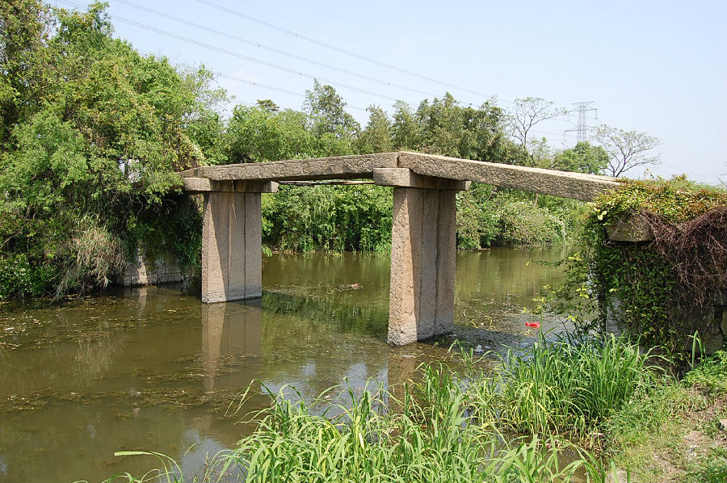

嘉兴市文物保护网 · 市级文物保护点 · 2022-05-16 · 原文

聚龙桥位于南湖区大桥镇胥山村，东西横跨聚龙港，俗称曹家桥。始建年代不详，明崇祯《嘉兴县志》已记载有“曹家桥”，现桥重建于清乾隆六十年（1795）。三孔无栏梁式石板桥，全长24.75米，桥面宽1.76米，由三块石板分三节平铺而成，东西侧分别有13级和7级台阶。共八个天磐石。南北桥额上刻有“重建聚龙桥”和“大清乾隆六十年四月”，并有卷草纹。无楹联。该桥保存较好，纪年明确，造型简朴，具有较高的历史和科学价值。2021年被公布为嘉兴市文物保护点。